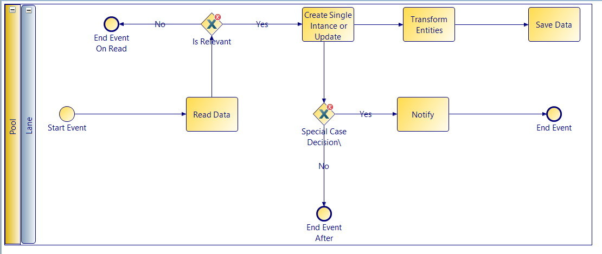

Hazard Smart Assistant
Technical Report
The problem
We have the following environment, a hospital, who is equipped with IoT enabled devices capable of monitoring the environment and detecting foreign substances, smoke, water/gas leaks, temperature, earthquakes, etc.
We need to implement a system that will interact with the IoT devices, collect data from the devices, analyse it and create an evacuation plan in case an emergency is detected in the hospital.
Requirements
The system should have the following properties:
- should be able to interact with a broad types of devices and monitor all connected devices
- the system should be able to filter the data from devices to get only the relevant data
- the system should be able to process the relevant data and decide if an emergency has occured
- in case of emergency the system should take action and notify the personnel and aid in the evacuation process
- because the system receive sensitive data all communication between system and device should be secured
Abstract
Hant or Hazard Smart Assistant is a system that helps certain entities to evacuate a number of persons from a building in case of hazards.
It provides alerts to rescue teams, such as firemen, police officers and at the same time is capable of helping with the rescue by providing an evacuation/rescue plan to be used by the victims or rescue teams. It relies on data provided by the hospital and it is capable to work with multiple hospitals at once without great computational effort.
Considering that each hospital is equipped with sensors tracking the environment, we will build a knowledge-based system that will make decision to help police department, fire department, medical staff and others, to make the fastest evacuation possible.
Also, to make something like this possible we will need to know the position of each patient and his medical condition. Based on this information the system will prioritize evacuation in some scenario.
To make our system even more precise, we will use specific information, from DBpedia and schema.org
This is a multi-device application, to be used with ease, and will have real-time response to, almost, any possible situation.
Critical data, plus various statistics, will be available via a SPARQL endpoint, and also real-time data will be saved, so the decision making algorithm and the planner, can be improved.
Introduction
In order to create such a big system, we divided the structure in five main components:
- Core
- MicroServices
- Planner
- Building plan
- Storage
The core of this application is written in java, it is the module that makes the decision and integrates the other components.
MicroServices will be written in NodeJs, and their main purpose is to send streams of date to the engine.
For the storage layer we will use Apache Jena, and SPARQL queries to save and read critical data when we will need.
MicroServices
This module is one of the most important modules because it provides the date on witch the system will make decision.
In this application, this data will be simulated, but the represent the actual sensors and other devices, that will send data to the core. This data will be in a Json format, so it will fast and easy to read on the core.
At this point we decided that we should have a specific set of MicroServices.
- Fire sensor
- Temperature sensor
- Motion sensor
- Luminosity sensor
- Leak sensor
- Bracelet
Core
This module is the heart of the application, and because of that it has more then one features.
- Receives data from MicroServices
- Makes a prefilter of data received
- Update data
- Send data to UI
- Decision making
- other
To explain better what this component does we created a business process management diagram.
First step is to receive data from MicroServices and read them. To receive data we created a rest endpoint. After we receive a stream of data, we read some specific data for every device, and if we consider that those data are relevant we continue by creating an instance of that device and send it further to decision making.
Every device that sends data to core, has an entity defined in java, so we could work with objects, not with streams of data. Also this objects will be saved in database, but sometimes not in their actual format. So, to save only relevant data, we created a Transformer, witch will adapt the device entity in an entity that can be saved.
Basically after the system reads date from streams, decides if those data ar relevant or not. If they are not relevant we move on to clear the stream. If they are relevant we sent them to decision making.
Public API
We implemented an API that the information generated by the app could be distributed and seen from various sources, browse, mobile app, etc. This API permits the visualisation of certain key informations such as the plans for entering and exiting any rooms, the state of the building, state of the people inside and an evacuation plan. This public API is a layer on top of our Internal API that uses it and restricts some of the users input. In other words it encapsulates the code used to make the computations and can only get the code generated after processing and also send some messages to modify within reason the data in the internal module.
Data listener: https://localhost:8443/NotificationEndpointDevice List: https://localhost:8443/getDevices
UI Interface: http://localhost:8080/
Patient Ontology: http://localhost:8080/PatientOntology.txt
Sensors Ontology: http://localhost:8080/SensorOntology.txt
Building Plan
This part is not a very complex one, but it is very important. Building plan has a crucial importance, because it will represent the basic input for out planner, and decision making algorithm. If this part encounters some issue, there is a strong possibility that the hole system to fail.
Our challenge here is to find an optimal way to represent the building.
For start we thought to try represent this building as an hierarchy of object, witch will contain precise information, and enough information for our purpose
Storage
This module is responsible for read and write data used in application.
For this we used Apache Jena framework and Sparql.
At this point we decided to store all of date in xml and rdf files. After we saved data in these files, we use Sparql to interrogate these files and extract the date we need.
More then this, we will use this file as description for entities in our application. For example if we want to know more about a person, witch is register in our server, we will access the about feature witch will return the xml file associated with that person.
To create this files we needed an ontology. For all the patients we could use FOAF ontology, but we had some special cases and we had to extend FOAF and create another ontology named "PatientOntology".
This ontology can be found under apache jena package in our project, or you can find it at http://localhost:8080/PatientOntology.txt
Also we needed an ontology for our devices/ sensors. First we thought to use SSN ontology, but it wasn't applicable on our data.
Instead of extending this ontology to, we decided to create a new one, from scratch, but following the example of SSn ontology
This one can also be found under apache jena package, or you can find it at http://localhost:8080/SensorOntology.txt
Results
Microservices
We implemented a set of templated microservices. There are enough devices emulated to be able to simulate an emergency scenario. We added scripts for configuring as many instances as needed. These instances are then automatically started. In this way we automate the way we handle the network of devices. One implemented microservice can span as many instances as needed and then used in creating a network of devices.
Core
This is the main module that integrates with all other components and orchestrates them in order to achieve our goal. It’s responsibilities are the following:
- Listen for device data changes
- Collect and filter the data
- Manage and Monitor for changes in sensor values that are significant
- Send an alarm to the UI component that displays the state and handles user interaction or other methods of countering the emergency
UI
We also created a tool to create building plans and to allow the user to map detected IoT devices to the newly created building plan. Besides this, we also modeled a UI-like interface to expose activities of the current system. When an alert launches this would show us the room in which the device has been triggered.
Further improvments
Because we can not take the information from any real hospital we must implement a simulation to be used in the testing of our app. The simulation must consist of several test cases with different levels of danger. For example we can simulate a medium size fire that can grow from room to room in some random timeframe. We must consider other possibilities as single source multiple source, the material that is burning, etc. We also have to simulate patients inside the hopsital and sensors that gives us real time data to check the system for bugs and performence.
References
- Scholary Html
- Safety and Reliability of Complex Engineered Systems
- Technologies of Internet of Things applied to an Earthquake Early Warning System
- Hazard Analysis Technique for the Internet of Things (IoT) and Mobile
- Sparql
- Apache Jena
- The trend towards the Internet of Things: what does it help in Disaster and Risk Management?